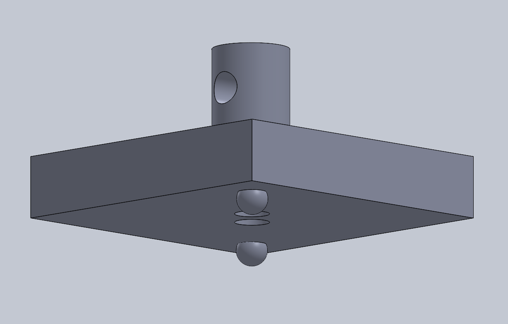

GTXR / Test and FEA correlation
Shear modulus testing & FEA correlation
Plate-twist testing to measure the in-plane shear modulus of carbon fiber and Rohacell sandwich panels and validate an ANSYS ACP model for fin flutter predictions.

Why measure it
Fin flutter predictions need the effective shear modulus of the fin laminate, and composite properties depend on how the part was made. The team measured G for 5 in × 5 in sandwich panels (Rohacell foam core, quasi-isotropic carbon fiber facesheets) and compared it with an ANSYS ACP sandwich model. Agreement within 5% would validate the model for future fin design.


Apparatus design
I designed the plate-twist test apparatus. Two 1 in aluminum plates keep the rig stiff, so the measured displacement comes from the panel rather than the fixture.
Steel ball bearings at opposite corners replace the usual conical contact points, which tend to puncture the panel. The lower fixture is clocked 90° from the upper one to create the twisting couple, and both mount to an Instron 5982 load frame.
Results
Force and displacement data were reduced in MATLAB to a shear modulus for each panel.
| Source | G (GPa) |
|---|---|
| Foam 1 | 3.396 |
| Foam 2 | 3.386 |
| Foam 3 | 3.474 |
| Mean of three panels | 3.419 |
| ANSYS ACP model | 3.281 |
Within 5%
The mean measured shear modulus was within 5% of the FEA prediction (mean difference about 4.2%), meeting the acceptance criterion set before the test. The validated value feeds fin flutter predictions.
Publication
Co-author and presenter (one of seven authors), AIAA Regional Student Conference Proceedings, 2024.
Shear Modulus Testing in Composite Sandwich Panels
AIAA 2024-85690